Sample works to present the creations of web applications - dynamic web sites combined with server side programming, Android apps and UWP. The major works included: simple website, Social Networking, eCommerce-Shopping Cart Applications, Games, Blogs, etc..Two main categories of practic coding, scripting and programming in the projects:Client Side Scripting and Server Side Scripting. Android API and UWP development are shown indivadually as well.
Showcase
Client Side Scripting/Coding
The client-side content is executed by a browser, works as Font-end of the site. It is changing interface behaviors within a specific web page in response to mouse or keyboard actions, or at specified timing events.The most widely used scripting languages are combination of JavaScript and HTML and CSS. JavaScript is fueled by an array of excellent frameworks that simplify it and give it more agility. My cases may concern technologies as:
HTML5CSS3
JAVASCRIPTJQUERY
AJAXXML
Sever Side Scripting/Coding
Server-side scripting is executed by a web server. The program is running on a web server and generates the web content on various web pages, manage user sessions, and control workflow. Server responses may be determined by such conditions as data in a posted HTML form, parameters in the URL, the type of browser being used, the passage of time, or a database or server state. In this showcase, Server-side languages include:
PHPLarval
JAVASCRIPTJQUERY
NODEJSAJAX
J2EEJSPEI & Tag
Apps and Platforms
Android API: Android provides a rich application framework to build innovative apps and games for mobile devices in a Java language. The samples are showed here illustrate practics about how to build apps using Android's various APIs.
.Net Platform using Visul Studio 2015
UWP (Universal Windows Platform):Windows 10 and Windows 10 Mobile (Samles shown in Software C#)
This case study is in "New Perspectives on HTML and CSS" Tutorial4.
Using provoided documements redesigned the newspaper printed layout to the online version. The layout was based on a fluid design that will render well on page widths from 1000 up to 1400 pixels. To pactice HTML5 and CSS3. The script was validated throught W3 Validator, and tested in a variety of devices, browsers, and screen resolutions to ensure its readable under different conditions.
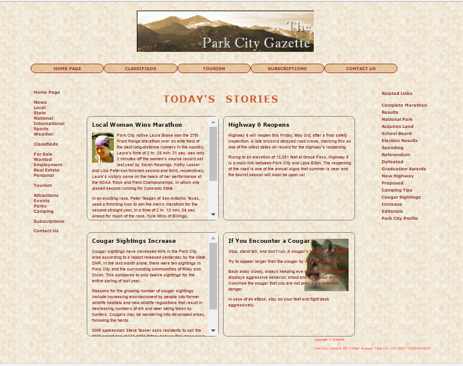
Sample CSS code
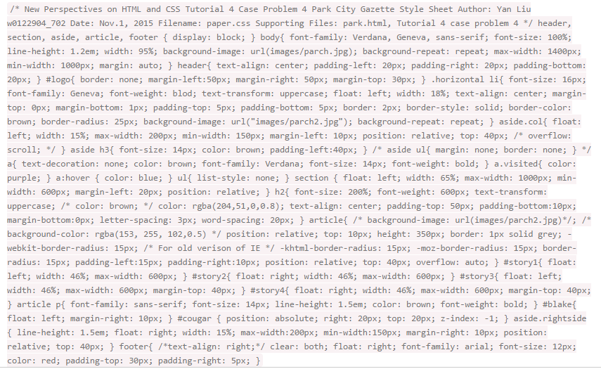
Sudoku
This case study is in "New Perspectives on HTML and CSS" Tutorial5.
Using html and css created sudoku website, then add some JavaScript to the site to simulate a simplified Sudoku puzzle. Bind a function to the click event on every originally empty cell of the Puzzle to show a JavaScript prompt pop-up box to allow a user to enter a new value. When user input, check whether the is valid according to Sudoku rules, show a pop-up message when violates the rules. A reset button can reset all cells that were originally blank.
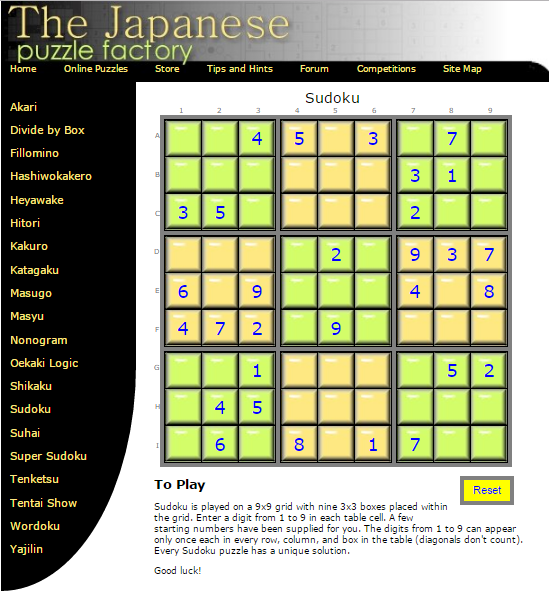
Sample JS code
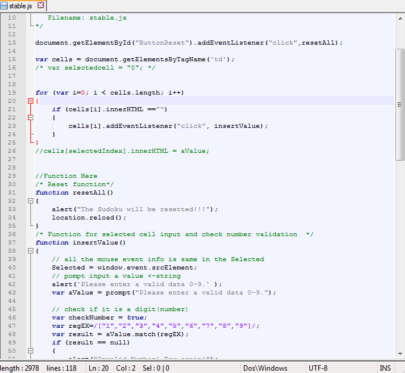
Google Direction
This case is to create a single page application that uses JavaScript and the Google Directions API to take in a starting location and destination along with expected arrival time and tells the user the steps to get there via public transport. The application uses w3-css to display the journey in a modern clean way, the direction using Ajax call to get XML response, validation using JS Validation API. The application works on at least three modern browsers
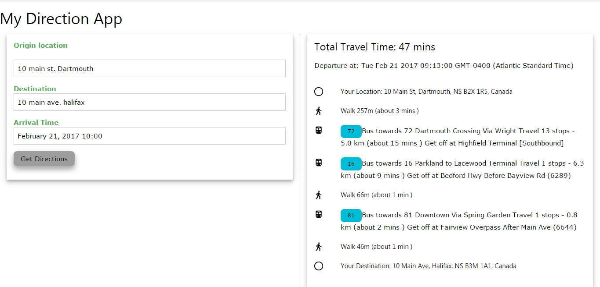
Sample JS code for Ajax call and XML Response
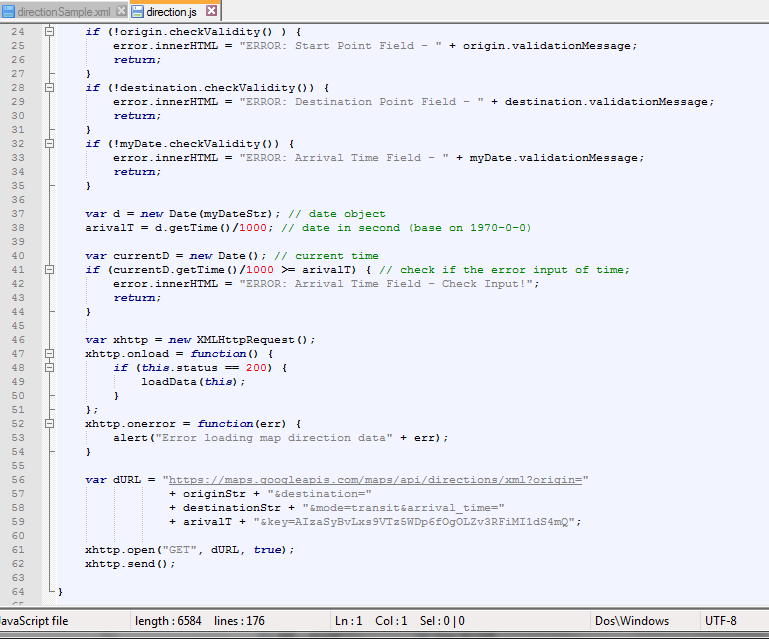
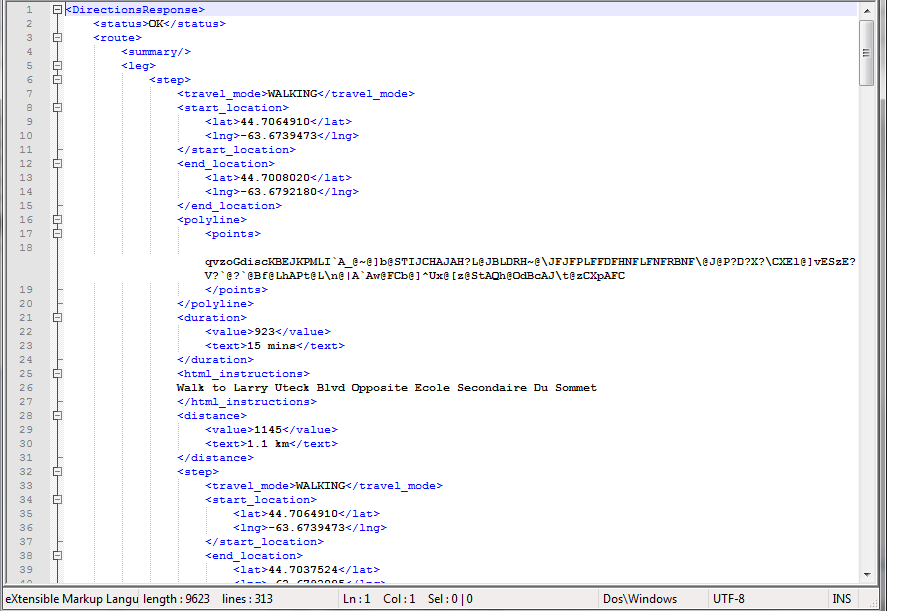
Using OneNote Api
Single Page Application that uses the Microsoft OneNote API to present a user with an online list of editable notes. Notes are retrieved, saved, edited and deleted asynchronously using JQuery AJAX calls with the user’s bearer token.In this case, Javascript and Jquery UI is use to paractice.
This case study is to create a web site in PHP that will allow authorized users to access the system for the viewing, searching, inserting, updating, and deleting of Employee records from the MySQL Employees sample database. PHP Debugging in PhpStorm, Data Connection using mySQL, font-end using HTML CSS and JavaScript.
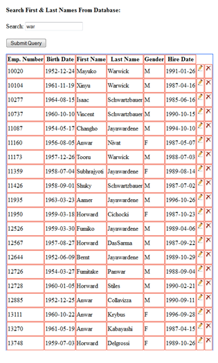
Sample php code for login
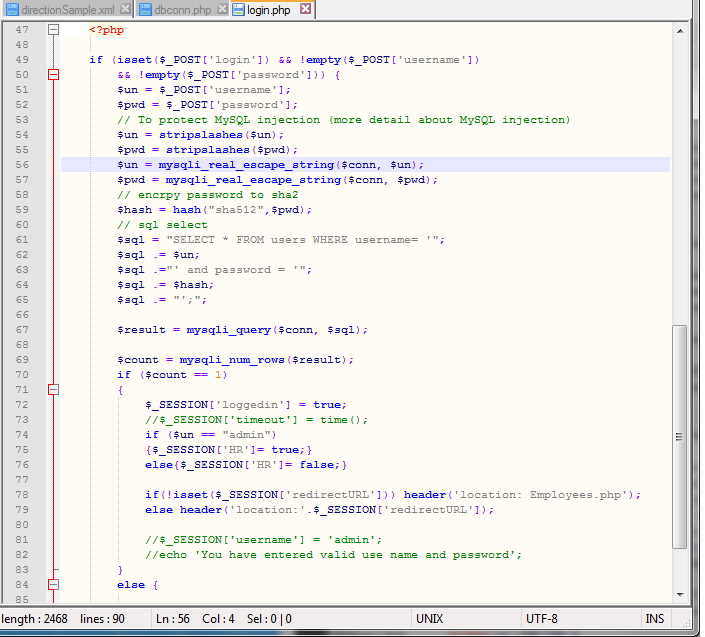
Laravel CMS
Laravel is a PHP framework for modern web apps. Laravel ships with built-in support for database migrations, object-relational mapping, routing and authentication, making it easier for developers to start and maintain their work
This project is building a custom CMS from scratch based on Laravel. Two web sites were created in PHP that will serve as a custom Content Management System. Using the administrative back-end site, the basic structure (i.e. pages, content areas, articles, and style templates) of a website can be dynamically created and modified by only authorized users with the appropriate permissions. The additions and changes to the sites structure will all be stored in the custom SQLite/MySQL databases that you will create to support this CMS.
The front-end site will be dynamically displayed based on the structure stored in the CMS database. The front-end site will be viewable by all users, but users with the appropriate permissions will be able to log in and make some changes to site content. Good security practices will be followed in the construction of the application. The application will be built using proper design practices to separate presentation code from business logic, and database manipulation code. The database design will be documented in a properly-formed ERD. The application will be built using proper design practices using Laravel MVC to separate presentation code from business logic, and database manipulation code.
Sample code for this project is integrated with Source Control in Github repository.
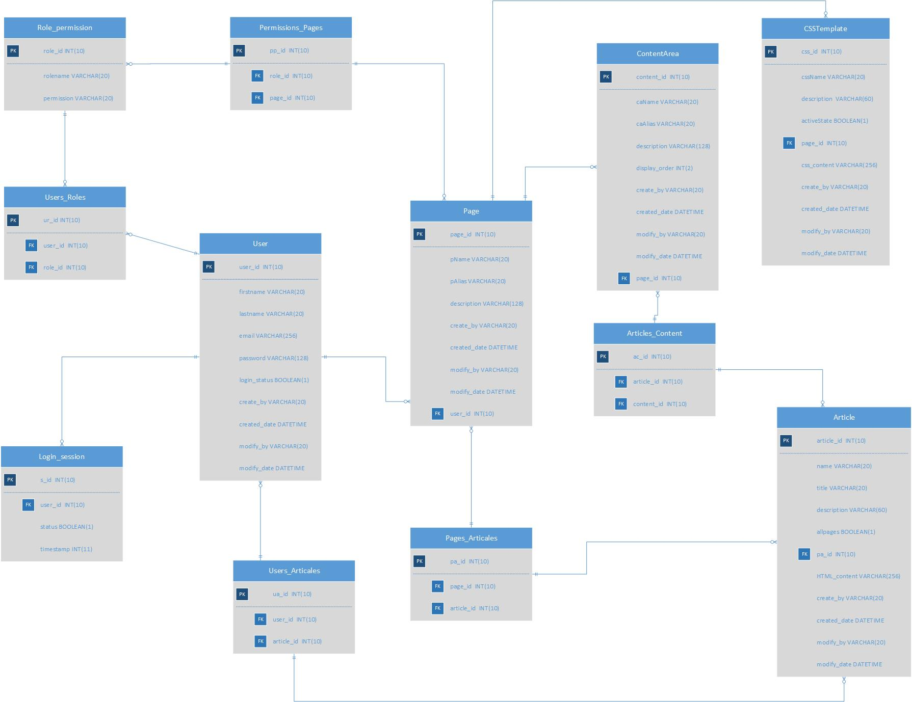
Screenshots Front_End Page
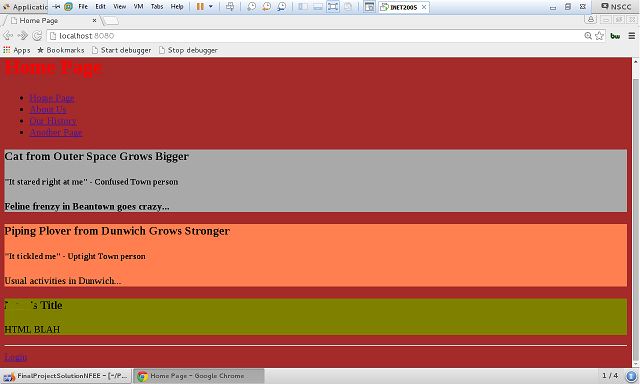
Screenshots Back_End Page Edit: Page as a example
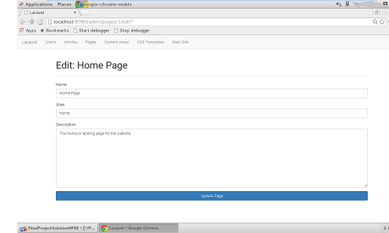
Screenshots Back_End Page Edit: Edit User as a example
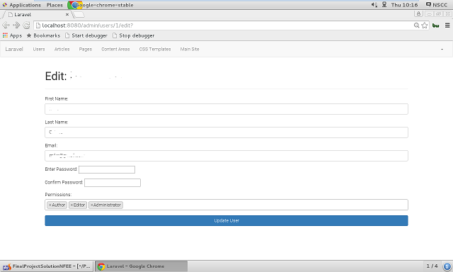
Using Json-Server
Sample Work 1 -- Single Page Blog
A single-page blogging application backed by a separate server. The backend REST server will be provided by JSON Server (details in the Server Setup section below). The web application is hosted in a separate web server running on the same machine (apache or IIS) and performs CRUD actions on the JSON server using JQuery AJAX calls. Entering a title and body should create a new blog post appended to the table. Each row in the list allows you to edit or delete a post.
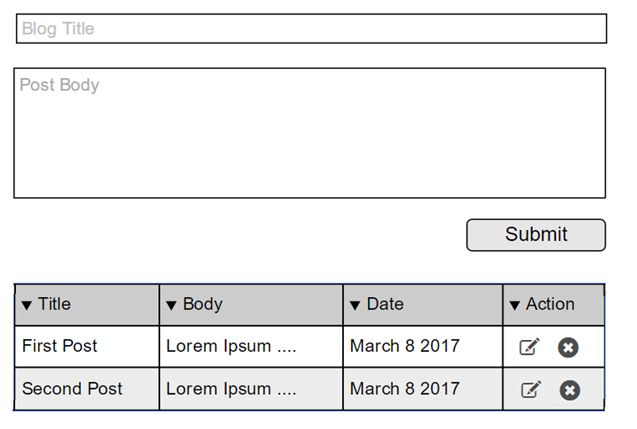
Sample JS/JQuery code
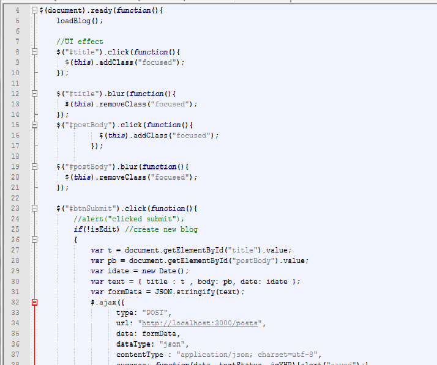
Json database
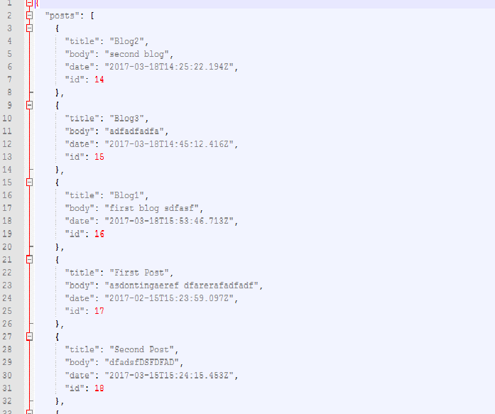
Sample Work 2 -- E-Commerce
As team work project, we maked an e-commerce sample application based on the REST API server, while utilizing AJAX calls. The backend server uses NodeJS for the web application, and the web application works on an IIS server. The web application consists of two html pages. The first page is for employees to manage product details such as name, category, description, stock, price and date. This allows the employee utilize some CRUD operations (create and update). The second page is meant to show the products to the customers. Customer can see product images, and upon choosing a product, the product details will be displayed. To design website we intend on using bootstrap, as well as jQuery visual effects. We also utilized the free portfolio template served by Start Bootstrap. In this case, JavaScript files, JQuery are used.
Front_End Design
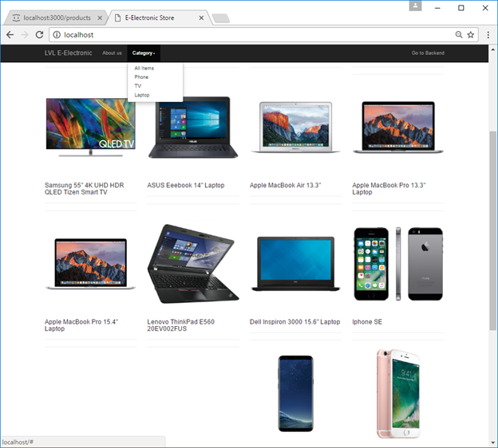
Back_End Design
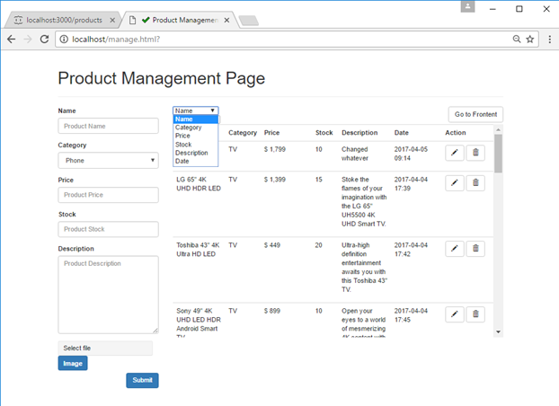
Json Server
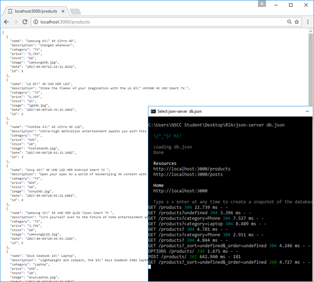
Sample Code
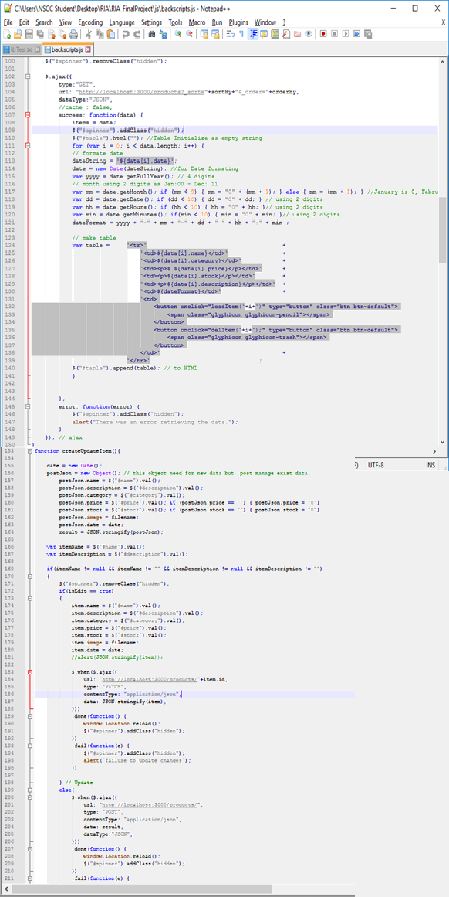
E-commerce
In this project, an online candy store system is designed as Web-based e-commerce software that helps retailer to sale candy bars online, control the in store, manage membership, payment, etc. This term project is arm to practice and get experience in java web application.
This project is to create a simple MVC application using servlets and jsp, using Eclipse JEE Neon package as IDE, and Tomcat (apache-tomcat-8.0.37) as Java Web container. A Small Candy store is an online store where customers can browse the catalog and select products of interest. Recently, the products in this store are supplied by 2 wholesales. The selected items may be collected in a shopping cart. At checkout time, the items in the shopping cart will be presented as an order. At that time, more information will be needed to complete the transaction. Usually, the customer will be asked to login or register as a member, with filling or selecting a billing shipping information, and payment information such as credit card number (demo). The selected products can be temporarily store for period time if not finishing process of order. An e-mail notification is sent to the customer as soon as the order is placed.
In this case, a website will be created to enable customer to shop online. Also, an administration back-end site will be created to allow staff members to keep track of orders. This case is a demo to real case, thus, no domain and real web host. The data system here is using Text files which easy to handle.